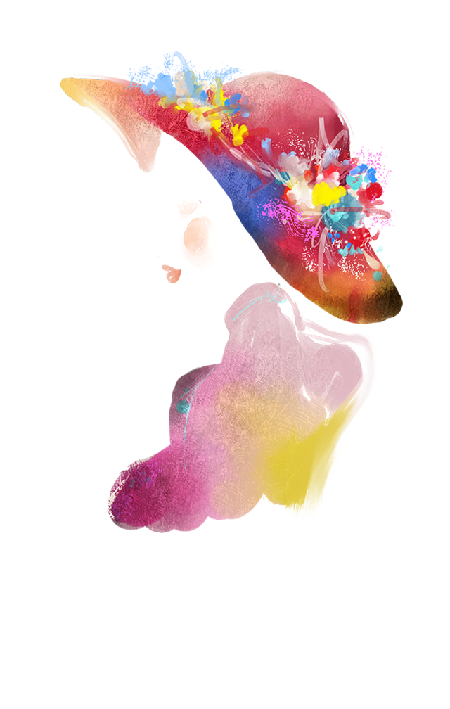

个人简历
姓名：郝小燕性别：女出生日期：1985/02/10学历：大专
手机：15230323591 邮箱:364162335@qq.com QQ: 364162335
•工作性质：全职
•期望职业：WEB前端开发、移动互联网开发
•工作地区：北京
•期望月薪：面议
•目前状况：已离职
•兼容性问题。熟练掌握html、div+css，能够手写符合w3c标准的页面代码；能够很好的把握及其他主流浏览器的
•熟练javaScript，掌握常用的插件以提高工作效率。可根据项目需求用原生js解决问题，熟悉jquery、
•熟悉js面向对象中的继承、封装、单体模式、工厂模式、原型模式等，坚持降低程序耦合度、提高代码复用性的设计理念，使代码高度模块化。
•能运用html5、css3进行移动端的页面开发。
•了解ajax技术与后台处理数据，熟悉浏览器和服务器交互机制，依据接口文档与后台进行交互。
对互联网强烈的好奇心和浓厚的兴趣，驱使我不断学习，积累知识，不断去了解新的前沿技能。敢于创新、为人谦和、责任心强、能够很快的融入到团队中去。能够根据任务对工作进行规划，有条理的完成工作。
希望能够争取这个平台来发挥我的能力，与你们共同创造精彩！
2015/03-- 2016/04腾岳科技
职务：web前端开发工程师
1.根据公司项目的需求和设计，迅速将psd、png的内容构成div+css或者table等等html代码
2.与产品经理、设计师、后端工程师紧密工作在一起，沟通并确定产品开发需求
3.解决不同的浏览器及不同版本的浏览器兼容性问题，网页产品页面交互效果的实现
4.使用JavaScript和JQuery实现页面上的动态效果以及交互效果，列如：选项卡、图片轮换等
2015/06之前一直从事UI、平面设计等行业……
Guesshttp://guess.tmall.com/
项目职责遵：循W3C标准，利用div+css技术实现网页重构，利用jQuery实现UI设计师设计的页面动态效果
项目描述：该项目是一个淘宝网站，为了起到宣传作用，大多以图片给人以直观的感受，网站简洁、大气运用了div+css、javascript等技术进行实现。
张志坚名医工作室 http://www.czzyyzzj.com/
项目职责：遵循W3C标准，利用div+css技术实现网页重构，利用jQuery实现UI设计师的动态效果。主要参与同客户的需求分析洽谈以及网页效果图的设计，负责效果图的div+css网页制作。
项目描述：该项目主要是一个个人工作室网站，项目为了起宣传作用，向浏览者清晰的展示工作室的基本信息，网站整体简洁、大方，应用了div+css，Javascript等技术进行功能实现。